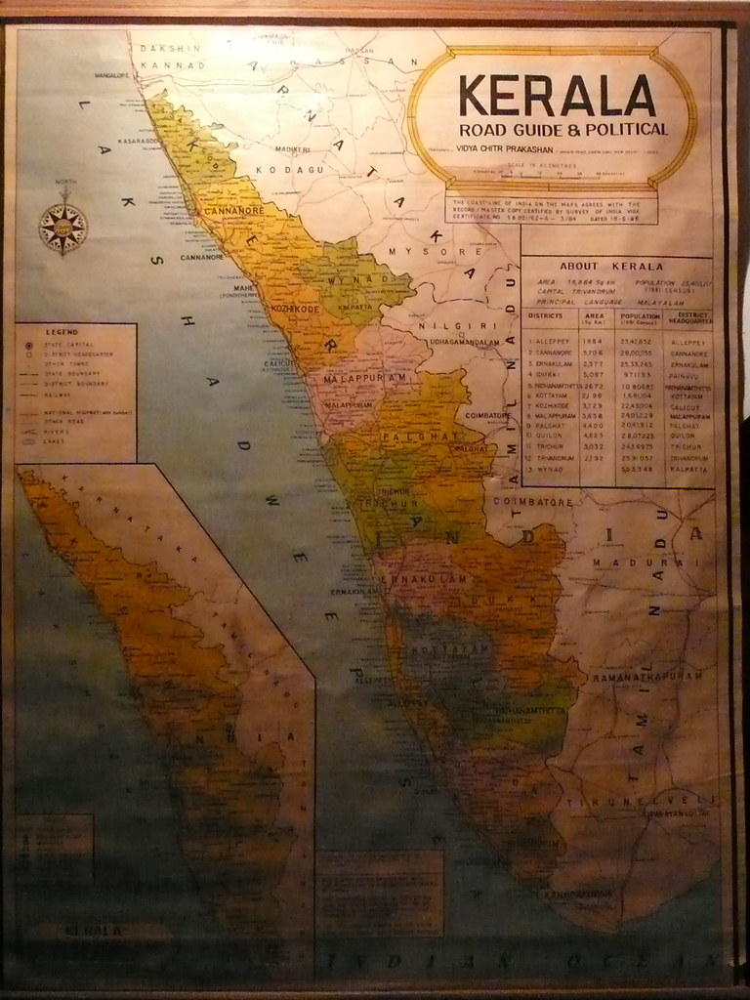

Kerala, often referred to as "God's Own Country," is a picturesque state located in the southwestern region of India. Renowned for its lush green landscapes, serene backwaters, pristine beaches, and vibrant culture, Kerala offers a unique blend of natural beauty and historical significance. Let's embark on a journey to explore the fascinating history and captivating tourism attractions that make Kerala a must-visit destination.
The history of Kerala dates back several millennia, with evidence of human settlements dating as far back as the Neolithic age. Over the centuries, Kerala has been influenced by various dynasties, including the Chera, Pandya, and Chola kingdoms, as well as colonial powers like the Portuguese, Dutch, and British. One of the most significant periods in Kerala's history was the spice trade, which attracted traders from across the globe and contributed to the region's prosperity. Kerala's strategic location on the spice route made it a melting pot of cultures, resulting in a rich heritage that is reflected in its architecture, cuisine, and traditions.
Kerala's tourism industry is as diverse as its landscape, offering something for every type of traveler. The backwaters of Kerala are perhaps its most iconic attraction, where visitors can cruise along tranquil waterways on traditional houseboats, immersing themselves in the serenity of the surroundings. The lush hill stations of Munnar and Wayanad offer a refreshing escape for nature lovers, with their mist-covered hills, tea plantations, and diverse flora and fauna.
For beach enthusiasts, Kerala boasts some of the most stunning coastal destinations in India, including Kovalam, Varkala, and Marari Beach, where golden sands meet the azure waters of the Arabian Sea. Adventure seekers can indulge in activities like trekking in the Western Ghats, wildlife safaris in Periyar National Park, or bamboo rafting in Thekkady.
In addition to its natural beauty, Kerala is also home to a rich cultural heritage, with vibrant dance forms like Kathakali and Mohiniyattam, traditional martial arts like Kalaripayattu, and colorful festivals like Onam and Thrissur Pooram. Visitors can explore ancient temples, churches, and mosques that showcase the architectural prowess of bygone eras.
Kerala's allure lies in its ability to offer a harmonious blend of history, culture, and natural beauty. Whether you're seeking adventure, relaxation, or cultural immersion, Kerala promises an unforgettable experience that will leave you enchanted and longing to return. Come, explore the enchanting landscapes and timeless heritage of Kerala, and discover why it truly is a paradise on earth.